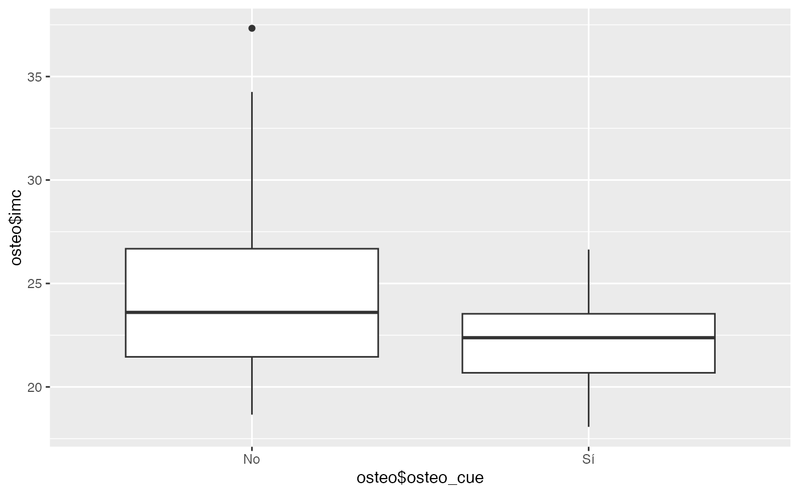

Diagramas por grupos
grpsggp.RdObtencion de los diagramas de distribucion segmentados, o no, por factor de agrupacion
Arguments
- x
vector: variable cuantitativa a resumir
- f
vector: factor cuyos niveles segmentan a la variable cuantitativa (si falta se da la descriptiva de x)
- se
valor real: error estandar a representar
- ggid
valor entero: indicador del grafico a representar
- lbls
vector de caracteres: nombres de los ejees
- bins
entero: numero de intervalos para el histograma
- hnmin
entero: tamano minimo/maximo de muestra para representar el histograma/diagrama de puntos
Examples
data(osteo)
grpsggp(x = osteo$imc, f = osteo$osteo_cue, ggid = 3)
